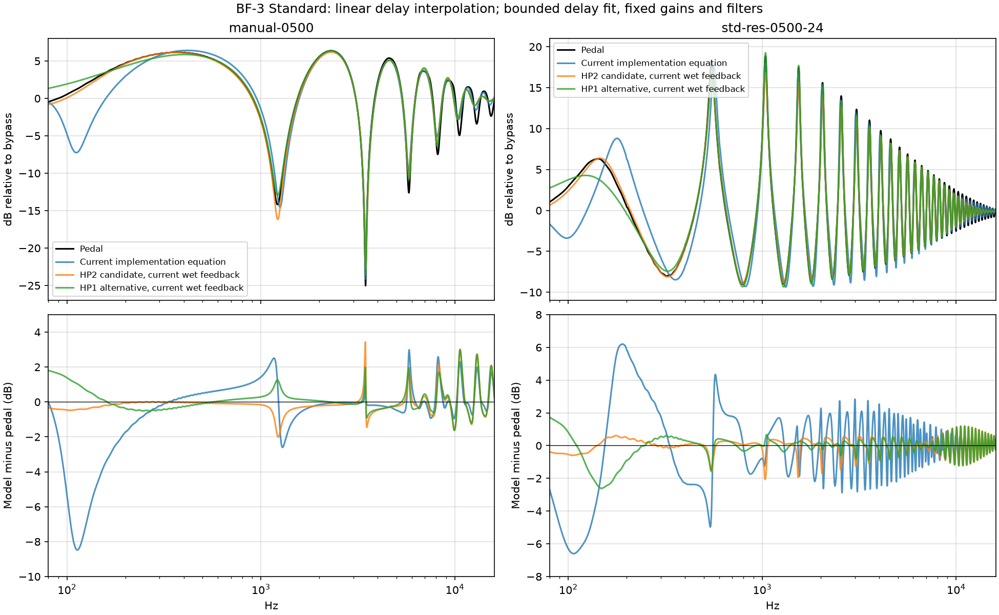

30 October 2026 · Continuation of the nine-pedal research audit · Analysis only
New capture result: the locked-control validation now demonstrates improvement with delay calibrated once at minimum Res and frozen for later Res settings. It supports the current-wet feedback prototype at 48 kHz. The historical comparisons below remain unchanged; exact control mapping across Manual positions and listening quality remain open.
Result: a three-biquad BF-3 Standard prototype substantially improves the static response when delay is estimated per take. Its advantage is not established with the nominal control table fixed, and its treble response has a tradeoff. It is a candidate for controlled implementation and listening validation, not a production replacement. Existing PH-3 recordings support a shared session gain change; an immediate calibration recapture is unnecessary.
The initial audit was committed on pedals/all as 961351f, using an isolated worktree to preserve the user's main checkout and WAVs. This continuation fits small causal filters to the BF-3 complex response, evaluates the discrete delay and feedback timing, and checks the PH-3 session discrepancy against repeated engaged material. No production C++ or raw capture was changed. The BF-3 analyzer now uses the current header's corrected gains/filter and accounts for the runtime's linear interpolation and previous-sample feedback. Archived fit JSONs remain historical.
Reproduction: run the following from a checkout of this branch. DATA_ROOT must contain captures/boss with the tracked JSON sidecars and both recorded and played WAVs. The original analysis used /tmp/namx-dsp-audit/branch, an export with symlinks to the existing WAVs. Dependencies are NumPy, SciPy, SoundFile, Matplotlib and Numba. These scripts write their own research results next to themselves; they do not modify the captures.
OPENBLAS_NUM_THREADS=1 python tools/research/check_ph3_calibration.py DATA_ROOT OPENBLAS_NUM_THREADS=1 MPLCONFIGDIR=/tmp/namx-mpl python tools/research/fit_bf3_complex.py DATA_ROOT OPENBLAS_NUM_THREADS=1 MPLCONFIGDIR=/tmp/namx-mpl python tools/research/validate_bf3_candidate.py DATA_ROOT
Artifacts: PH-3 check, PH-3 results, BF-3 fit, fit parameters and ideal-delay comparisons, discrete evaluation and numerical renderer, discrete results and stress checks. The discrete results take precedence over the ideal-delay comparisons for implementation assessment.
Observed: comparing 2026-10-28-followup with 2026-10-28, the output/played RMS of bypass noise rises 2.3467 dB. The repeated engaged s4-rate-0500 rises 2.3354 dB. Normalizing each by its own session's bypass leaves −0.0113 dB difference. Bypass Welch spectra over 100 Hz–16 kHz have median offset +2.3490 dB and 0.0011 dB RMS shape difference after removing that offset. The bypass markers independently show about +2.35 dB on pedal/loopback ratio. The other tested sessions agree with the original.
Conclusion within these recordings: a shared pedal-side gain change explains the tested repeated setting. Use same-session bypass normalization. The earlier documentation's claim of a last-session bypass-only −3 dB change is not supported by the corrected reference extraction. Unknown: the physical source of the gain change and whether it persisted unchanged through every frozen take. The tiny Welch residual comes from deterministic repeated input; it is not a confidence interval from independent captures. Do not alter raw WAVs or interpret a free fitted mix gain as an identified internal parameter.
The current Standard model's large bass error is consistent with the wrong wet/dry phase relationship. A magnitude-only wet fit can match the wet path while missing their sum. The initial measured complex-template experiment supported that hypothesis. This follow-up asks whether a small IIR can capture the useful behavior without a long FIR or an additional all-pass network.
H(f) = gd + gw Z(f) / (1 − r Z(f)) Z(f) = W(f) D(f) gd = 10^(−0.13/20), gw = 10^(1.45/20)
Four candidates were considered: one first-order or one second-order high-pass, each followed by two second-order low-passes, fitted either to the separated long-delay wet impulse alone or jointly with one full comb response. The separated wet target comes from Standard manual-0700; manual-1200 supplies the joint target at minimum Res and Depth. The joint fit uses 600 logarithmic frequency points from 100 Hz to 14 kHz, real and imaginary residuals, bounded gain/phase compensation, and a separate ±0.04 ms common clock-shift nuisance on the full response. The fitted common shift is 0.00508 ms. This is not an independently measured transport change.
The wet-window residual is scaled by 1/max(|Wtarget|,0.18), with another factor 0.1 below 250 Hz, where separation from the dry impulse is least reliable. The full-response residual is scaled by 1/max(|Htarget|,0.35). These weights limit the influence of weak bins and deep nulls; they are practical fitting choices, not a measured inverse-noise covariance. Eight starts were tried for each isolated-wet model; joint fitting starts from the best isolated fit. No parameter confidence intervals or global uniqueness claim follow.
The evaluation set has 11 responses, one of which is the joint-training manual-1200. Ten are excluded from the joint coefficient objective: three other Manual settings, five Res/Manual combinations, and two quiet Standard takes. Each evaluation permits only a ±4% delay adjustment around the established Manual table; gain, Res and filter parameters remain fixed. No fitted delay reaches its bound. Because candidate selection inspected these results, this is retrospective parameter exclusion with a fitted timing nuisance, not a pristine prospective holdout.
Metadata issue: the generic manual-0700-24 and res-* files in 2026-10-27-res-quiet are Ultra according to their free-text notes. They cannot be treated as Standard solely from the structured knob fields. Only std-manual-1200-24 and std-res-0500-24 enter this evaluation. Ultra topology and its existing calibration remain a separate unresolved problem.
Identifiability: wet gain and tone normalization need a fixed convention; the implementation must preserve the fitted normalization below. Filter phase, line delay, reference timing and physical knob repeatability are coupled. A short wet window can bias the inferred low-frequency phase. Agreement across delay and Res settings supports the behavioral filter but does not recover the original circuit, filter order or physical loop latency.
For delay in samples d = N + μ, with integer N and 0 ≤ μ < 1, the existing linear interpolation has response
D(z) = z^(−N) [(1−μ) + μ z^(−1)].
Current production schedule: v[n] = x[n] + r w[n−1], w = W{D(v)}
Hcurrent(z) = gd + gw W(z)D(z) / [1 − r z^(−1)W(z)D(z)].
Candidate schedule: w[n] = W{D(v)}[n], then v[n] = x[n] + r w[n]
Hcandidate(z) = gd + gw W(z)D(z) / [1 − r W(z)D(z)].
The current cached feedback state adds one sample only in the loop denominator. The old analyzer omitted it. With the candidate filter and the retained Res map, computing the current wet sample before writing feedback improves the evaluated resonance response. This remains causal because the minimum corrected delay exceeds one sample. It is a tested model alternative, not evidence that the physical pedal has exactly this scheduling.
Implementation indexing: the existing DelayLine::interpolate is relative to the most recently pushed sample. Before pushing sample n, that newest sample is n−1. Therefore a read-before-push implementation must read interpolate(d−1) to realize delay d relative to n. Merely moving the existing read before the push while keeping d would add a sample and defeat the intended change. The reference renderer instead indexes directly relative to the slot for sample n.
The metric below is RMS of model-minus-measured dB magnitude after the existing narrow smoothing: power is averaged over frequencies from f/1.01 to 1.01f, then converted to dB. RMS uses uniform FFT bins within each band. It is neither waveform error nor a perceptual score. Values are across the ten evaluations excluded from coefficient fitting.
| Model with bounded delay fit | Median RMS, 100 Hz–10 kHz | RMS range, 80–200 Hz | Median / worst RMS, 10–16 kHz |
|---|---|---|---|
| Current four-biquad implementation equation | 1.099 dB | 3.000–5.203 dB | 0.369 / 0.989 dB |
| HP2 candidate, existing cached-feedback schedule | 0.653 dB | 0.192–0.541 dB | 0.654 / 1.372 dB |
| HP2 candidate, current-wet feedback | 0.432 dB | 0.192–0.541 dB | 0.646 / 1.372 dB |
| Simpler HP1 alternative, current-wet feedback | 0.436 dB | 0.759–1.999 dB | 0.642 / 1.354 dB |
The second-order high-pass earns its extra state mainly in the bass, not in the aggregate 100 Hz–10 kHz score. HP2 reduces RMS in that aggregate band for every excluded evaluation relative to current. Its worst excluded aggregate RMS is 0.683 dB. However, the treble median rises from 0.369 to 0.646 dB. The two quiet Standard cases improve from 1.184 to 0.404 dB and 1.418 to 0.468 dB; this supports the small-signal result at the lower input level, not an identified saturation law.
Fixed-control qualification: using the nominal delay table with no per-take adjustment, median 100 Hz–10 kHz RMS is 2.662 dB for current and 3.649 dB for the HP2 current-wet candidate. Thus the improvement is conditional on estimating delay. Small delay differences move the upper comb notches strongly. Hand-set controls are a plausible contributor, but timing/model-phase errors are competing explanations. Do not claim that the candidate predicts exact knob settings better until timing and knob repeatability are independently constrained.

The earlier ideal-delay comparison plot records the model-selection stage. Use the plot above and the discrete JSON for the prototype handoff. The smoothed response residual does not bound unsmoothed null depth, waveform phase error, transient shape, moving-comb sidebands or audible difference.
Scope: BF-3 Standard only, initially at 48 kHz. Keep the established Manual/Depth/Rate maps and output clipping as baseline behavior; they have not been re-identified here. Replace the wet tone for the research prototype with the following three normalized biquads, preserving the single wet path in the loop.
| Order | Type | Frequency | Q |
|---|---|---|---|
| 1 | Second-order high-pass | 148.322386875 Hz | 0.544603378 |
| 2 | Second-order low-pass | 7899.773802485 Hz | 0.405237370 |
| 3 | Second-order low-pass | 9995.498898443 Hz | 1.013954812 |
The digits permit reproduction, not measurement precision. Use the stored hp2_joint.sos["48000"] in the coefficient artifact, or construct each section as follows:
ω = 2π fc/fs, c = cos(ω), α = sin(ω)/(2Q)
HP numerator = [(1+c)/2, −(1+c), (1+c)/2]
LP numerator = [(1−c)/2, (1−c), (1−c)/2]
denominator = [1+α, −2c, 1−α]
Divide all coefficients by (1+α).
P(z) = product of the three sections
W(z) = P(z) / |P(exp(j2π·1000/fs))| · 10^(−0.247259882681/20)
gd = 10^(−0.13/20), gw = 10^(1.45/20)
delay_compensation = 0.0529850964983 ms
d[n] = (d_table_or_sweep[n] − delay_compensation) · fs/1000
w[n] = W{linear_interpolated_past_buffer_at_delay_d}[n]
v[n] = x[n] + r w[n] // write this after computing w[n]
y[n] = clip(gd x[n] + gw w[n], −A, A)
The −0.24726 dB correction is part of W and therefore part of every loop pass. Do not re-normalize it away or apply it only to the output. Retain r = [0, .146, .394, .668, .849] at rotation fractions [0, .2, .5, .8, 1], linearly interpolated. Retain logarithmic interpolation of Manual milliseconds [14.673, 9.065, 2.005, .701, .447] as the provisional map; the fixed-control limitation above is a release blocker, not solved by these constants.
For the existing modulation baseline, interpolate blend=[0,.368,.657,.882,.984] and swing_ms=[0,1.102,4.867,10.655,14.582] at those same rotation fractions. Set floor=(1−blend)Manual_ms+blend·.33. Smooth a 0–1 triangle with coefficient 1−exp(−2π·1.53/fs); let d_table_or_sweep=floor+swing_ms·smoothed_triangle^2.5. The timing tests here do not validate a new LFO law or justify extrapolating Rate beyond its existing range.
The minimum corrected delay is .277015 ms, or 13.297 samples at 48 kHz, so the current-wet schedule has no instantaneous algebraic loop. Preserve per-channel filter/buffer states and shared modulation as in the baseline. Keep the dry path undelayed in the application; the pedal's roughly .554 ms transport is removed for these comparisons. No additional processing latency is required. Coefficients and gains can be prepared outside audio processing; the mathematical cost is three biquads, one interpolated read and one write per channel per sample.
Output clipping remains the baseline hard clamp A=10^((R_dBFS+.55)/20), with the application's existing assumed guitar reference R_dBFS=−6. That voltage/level convention and the clipping law were not validated by this small-signal experiment. Neither a new nonlinear stage nor a change to Ultra is justified here.
The candidate's sections have maximum pole radius .98078, .98233 and .99113 at 44.1, 48 and 96 kHz. A dense frequency grid gives maximum static loop magnitude below .827 at r=.849 for all three rates. Linear interpolation has magnitude at most one for a fixed fractional delay. These checks support frozen-delay stability; they are not a general certificate for the time-varying feedback system.
The numerical renderer was exercised at all three rates, Rate=.055, 1 and 10 Hz, maximum depth/swing and r=.849, for both feedback schedules. Each test contains two seconds of Gaussian input with standard deviation .02 followed by six seconds of silence. All outputs are finite without output clipping; wet peaks are below .062 and final-second RMS below 1.2×10−149. A separate 131072-sample impulse at fixed .447 ms agrees with the derived discrete transfer function to less than 6.6×10−12 maximum complex error. This validates the research renderer's indexing and equations in double precision, not the C++ implementation or all float/state/control transitions.
Stable does not mean sample-rate invariant: directly redesigning these same frequency/Q values at 44.1 and 96 kHz changes the wet-filter magnitude versus 48 kHz by up to .154 and .525 dB below 10 kHz, and 3.877 and 9.952 dB up to 16 kHz. These are wet-filter differences, not full dry+wet output errors. Existing captures are all at 48 kHz. Accept only the 48 kHz prototype now; compare a fitted rate-preserving realization with fixed-internal-rate processing before choosing another-rate strategy. This is a future design decision, not justification for immediately adding a resampler.
First use existing data: the implementation agent should render the baseline and candidate with identical input calibration and initial conditions. At frozen delay, require agreement with the research transfer equation before comparing the pedal. Then evaluate the existing clicks, bursts and moving sweeps without per-take filter/gain fitting. Measure echo spacing/amplitude, modulation extrema and trajectory, signed spectral residuals, harmonic distortion at the available levels, and transient envelopes. Retain full-band residuals, including 10–16 kHz. A static-magnitude improvement alone is insufficient.
One small new Standard capture block would resolve the most important ambiguity: leave Manual at 12:00 and Depth at minimum throughout; Rate at minimum; record the existing deterministic log sweep at −24 dB relative to nominal with Res at minimum, 3:00, maximum, then minimum again. Record bypass immediately before and after the block. Document that Manual/Depth were untouched, and use start/end timing probes or the loopback throughout to check drift. Keep Res changes outside each measurement segment and allow decay before the next sweep.
This block holds physical delay more tightly than independently reset controls. Estimate delay and gain only from the first minimum-Res take; freeze them while predicting the three later takes. If the minimum-Res repeats agree and the candidate predicts high-Res responses, the simpler filter/current-wet loop gains support. If high-Res prediction requires Res-dependent delay, the loop phase or feedback topology needs revision. If the minimum-Res repeats drift, establish timing/setting repeatability before choosing topology. If the before/after bypass changes, treat calibration as the uncertainty source. Do not attribute any outcome uniquely to circuit components.
Only if remaining bass ambiguity matters: add a long-delay Manual-minimum/Depth-minimum/Res-minimum periodic multisine containing 80, 100, 160, 250 and 1000 Hz, with crest-controlled peak at nominal minus 24 dB and a paired bypass. Use several steady periods and fit complex amplitudes against loopback. It avoids separating overlapping impulse windows. Agreement with the candidate would support its bass phase; disagreement with the sweep-derived window would implicate extraction/window bias or an amplitude-dependent response. This is conditional, not a prerequisite to the locked-control block.
Listening and release criteria: compare level-controlled dry-guitar reamps through physical pedal, baseline and candidate, including sustained bass notes and fast/high-Res sweeps. Keep relative wet/dry balance; do not independently normalize every frequency response. Randomize presentation and repeat judgments. Require a consistent audible benefit or no loss on important material, better prospective static responses with timing frozen, no material treble/transient regression, and stable float processing across the supported control range. Do not set an arbitrary universal RMS threshold as a substitute for audibility and measured repeatability.
The initial audit's separate CS-3 jump-size/carrier experiment and NS-2 near-threshold history experiment remain useful. PH-3 calibration no longer needs an immediate new capture. TR-2 and GE-7 remain adequate baselines, and OC-5 remains lower priority. None of these findings justify adding model complexity across the collection by default.